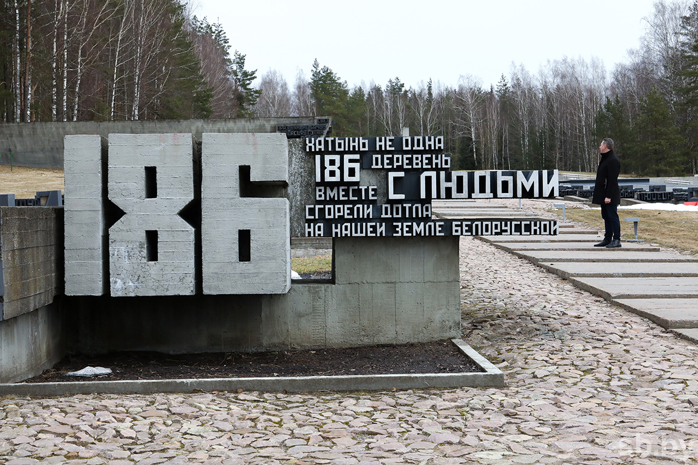

.
Хатынь


Бывшая деревня Логойского района Минской области Хатынь стала символом
трагедии белорусского народа, скорбной страницей истории времен Великой
Отечественной войны. В Хатыни жили обычные белорусские крестьяне, которые
обрабатывали землю, выращивали урожай, растили детей, справляли свадьбы и
праздники. Трагедия настигла Хатынь в морозный солнечный день 22 марта
1943 года. Утром отряд карателей окружил деревню. Из домов выгнали
стариков, детей, женщин и мужчин. Больных и немощных подталкивали
прикладами. Всех их согнали в сарай на окраине и подожгли. Сгорели 149
человек, в том числе 75 детей. Тех, кто пытался спастись, расстреливали. В
пламени, охватившем всю деревню, исчезли 26 домов. Чудом спаслись 5 детей
и 1 взрослый – Иосиф Каминский (прототип скульптуры «Непокоренный
человек»).На месте бывшей деревни (54 км от Минска) в память о жертвах
фашизма на территории Беларуси возведен мемориальный комплекс «Хатынь».
Архитекторы: Ю.Градов, В.Занкович, Л.Левин, скульптор С.Селиханов.
Комплекс повторяет планировку бывшей деревни, включает элементы Кладбище
деревень, Площадь Памяти, Стену Скорби, Древо жизни. Мемориал открыт 5
июля 1969 года, с тех пор стал местом всенародного поклонения. Посетителей
встречает бронзовая скульптура Непокоренного человека, который восстал
живым из огня, вынес оттуда тело мертвого мальчика и несет его, несет
через годы, как бы произнося своими сжатыми губами вечное проклятие
фашизму, проклятие любому злу на Земле. Рядом, на месте сарая, где фашисты
сожгли жителей Хатыни, черная плита, которая напоминает крышу, ставшую
последним приютом погибшим. На братской могиле Венец Памяти из белого
мрамора со словами наказа мертвых живым: «Люди добрые, помните: любили мы
жизнь и Родину нашу, и Вас, дорогие. Мы сгорели живыми в огне. Наша
просьба ко всем: пусть скорбь и печаль обратятся в мужество ваше и силу,
чтобы смогли вы утвердить навечно мир и покой на Земле. Чтобы отныне нигде
и никогда в вихре пожаров жизнь не умирала!». С другой стороны Венца ответ
живых погибшим: «Родные вы наши. Головы в скорби великой склонив, стоим
перед вами. Вы не покорились фашистским убийцам в черные дни лихолетья. Вы
приняли смерть, но пламя любви к Родине нашей советской вовек не погаснет.
Память о вас в народе бессмертна, как вечна наша Земля и вечно яркое
солнце над нею».